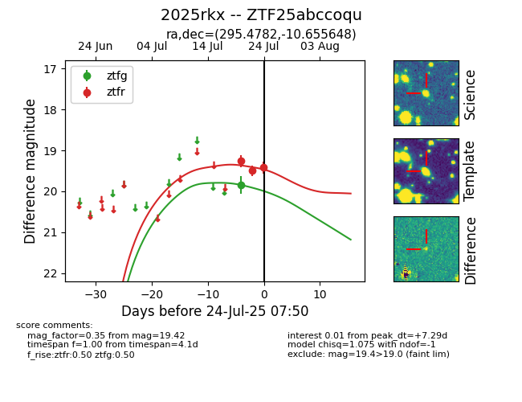

Target ZTF25abccoqu at 2025-07-24 07:50, see:
FINK: fink-portal.org/ZTF25abccoqu
Lasair: lasair-ztf.lsst.ac.uk/objects/ZTF25abccoqu
ALeRCE: alerce.online/object/ZTF25abccoqu
TNS: wis-tns.org/object/2025rkx
YSE: ziggy.ucolick.org/yse/transient_detail/2025rkx
alt names
ZTF25abccoqu (ztf,fink)
2025rkx (tns,yse)
coordinates:
equatorial (ra, dec) = (295.4782,-10.65565)
galactic (l, b) = (28.9554,-15.98524)
photometry
last ztfg=19.85, ztfr=19.42
1 ztfg, 3 ztfr detections
